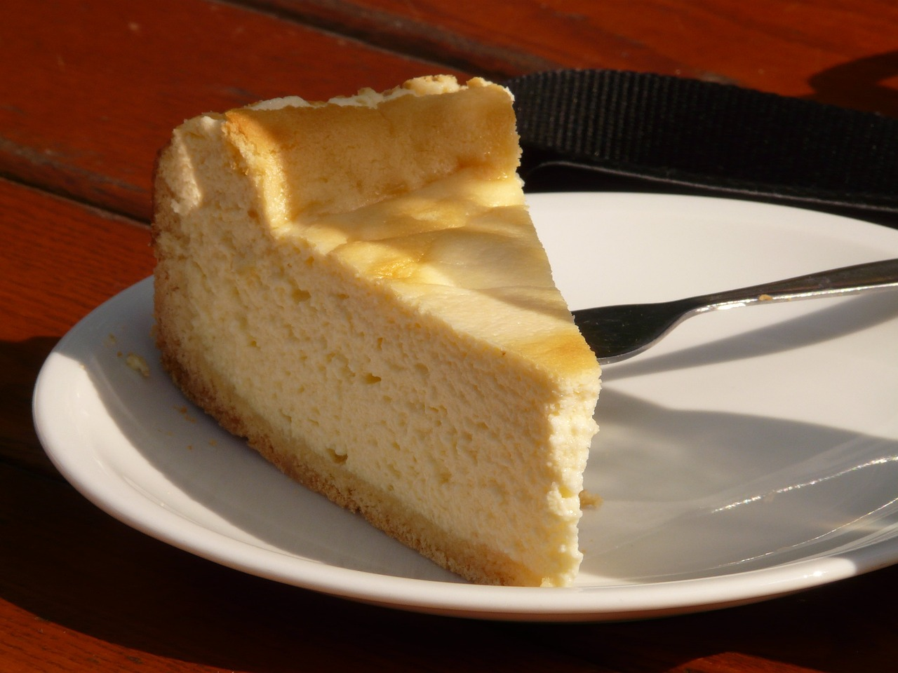
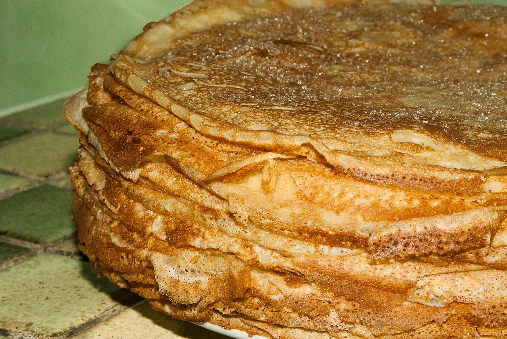

POSTRES
Entrantes
Plato principal
<-- Inicio
TARTA DE QUESO
- Tiempo: 70 min.
- Para: 8 personas
| Ingredientes | Cantidad |
|---|---|
| Queso crema | -->350g |
| Huevos | -->2 XL |
| Nata o crema de leche | -->175g |
| Azúcar | -->100g |
| Harina de trigo | -->40g |
Paso 1: Elegimos el molde que más os guste, en este caso me he decidido por un molde desmoldable redondo de 20 cm por 20 cm. Lo engrasamos con la mantequilla y ponemos papel para vegetal o para hornear tal como veis en las fotos y el vídeo. El hecho de forrarlo con papel nos permitirá desmoldar la tarta sin ningún problema. Reservamos.
Paso 2: Precalentamos el horno a 200º C, calor arriba y abajo.
Paso 3: En un bol añadimos todos los ingredientes, el queso crema, la nata, los dos huevos, el azúcar y, por último la harina. Es necesario que el queso crema esté a temperatura ambiente para poder trabajarlo. Ya que si lo añadimos directamente del frigo, estará demasiado duro para poder integrarlo con el resto de ingredientes.
Paso 4:Podemos batir bien con unas varillas o incluso emplear una batidora de mano. Con la batidora nos aseguraremos de que los grumos se eliminen totalmente, pero en realidad es conveniente no batir en exceso la mezcla. Vertemos la mezcla en el molde forrado y lo introducimos en el horno previamente calentado a 200º C.
Paso 5:Horneamos la tarta de queso durante unos 45 minutos aproximadamente a 200º C. y la colocamos en la bandeja en el medio del horno. Temperatura arriba y abajo, con aire. Comprobamos que esté en su punto pinchándola con un palito. Si este sale limpio estará lista.
Paso 6:Retiramos el molde del horno y dejamos que se temple sobre una rejilla, sin desmoldar. Desmoldamos la tarta, esperamos a que esté totalmente fría y la guardamos en el frigo hasta su consumo. Estará mucho más rica al día siguiente cuando haya estado unas horas en la nevera. No olvidéis servirla acompañada de mermelada de frambuesa o vuestra compota preferida.
Paso 7:Se trata de una tarta dulce y sabrosa, perfecta para un postre o una merienda de rechupete.
CREPES

- Tiempo: 45 min.
- Para: 2 personas
| Ingredientes | Cantidad |
|---|---|
| Huevo | -->4 |
| Leche | -->1L |
| Harina de trigo | -->400g |
| Sal | --> una pizca |
| Mantequilla | -->70g |
Paso 1:Lavamos un limón (o si una naranja si preferís su sabor), rallamos sin llegar a la parte blanca de la fruta pues amarga y reservamos.
Paso 2:La pasta-crema de la crêpe es bastante fácil de preparar. En un bol echamos la leche, la harina, un pellizco de sal, la mantequilla en pomada y los huevos. Batimos todo con la batidora sin que queden grumos. Dejamos reposar una hora para que acabe de espesar aunque la crema debe quedar suelta.
Paso 3:Si son las crêpes dulces añadimos a esta crema la ralladura de limón o naranja, una cucharada de esencia de vainilla y 2 cucharadas de azúcar.
Paso 4:En una sartén antiadherente caliente untamos un poco de mantequilla. Un truco fácil es partir un poco de mantequilla en forma de barra, envolver un extremo en papel de aluminio para poder sujetarla y untar con el otro la sartén. Untamos toda la sartén de esta manera hasta que se derrita la mantequilla, no debe de quedar muy grasienta pero tampoco debemos quedarnos cortos.
Paso 5:La primera crêpe es de prueba (yo me la zampo en el momento), es la más grasienta porque la sartén va cogiendo el punto de temperatura y el grado de grasa de la mantequilla, la segunda suele salir ya perfecta.
MAGDALENAS

- Tiempo: 20 min.
- Para: 3 personas
| Ingredientes | Cantidad |
|---|---|
| Huevos | 3 |
| Harina de repostería | 200g |
| Azúcar | 125g |
| Leche entera | 50mL |
| Aceite de oliva | 100mL |
Paso 1:Vamos a preparar unas 20 magdalenas, perfectas para desayunar durante unos días. En un bol grande batimos los huevos con unas varillas, con movimientos rápidos y envolventes. Siempre procurando que nos quede el batido esponjoso y aireado.
Paso 2:Añadimos ahora poco a poco el azúcar mientras seguimos batiendo y mezclando de la misma manera. Toca el turno del aceite, lo vertemos despacio y lo vamos mezclando con el resto de ingredientes. Seguimos el mismo proceso con la leche, luego la harina, una pizca de sal y finalmente la levadura química. Metemos la mezcla en el frigorífico y mientras se enfría.
Paso 3:Colocamos los moldes de silicona sobre la bandeja, e introducimos el papel rizado dentro de ellos. Antes de verter la mezcla en los moldes, le damos una pequeña batida ya que con el frío se habrá espesado un poco.
Paso 4:Precalentamos el horno a 220º C con temperatura arriba y abajo sin aire.
Paso 5:Llenamos hasta ¾ partes y le echamos un poquito de azúcar arriba del todo (opcional). Bajamos la temperatura a 200º C y horneamos 15 minutos en la bandeja central de vuestro horno, a esta temperatura las magdalenas deben de subir sin problema. Su estado idóneo es cuando comprobamos que están con el copete perfecto y doraditas. Este punto es importante ya que sabéis que de un horno a otro pueden variar el calor y el tiempo.
Paso 6:Pasado el tiempo, retiramos del horno. Dejamos reposar dentro de los moldes de silicona, para que asiente bien la masa. Y ya tendremos nuestras deliciosas magdalenas, ¡a comer!